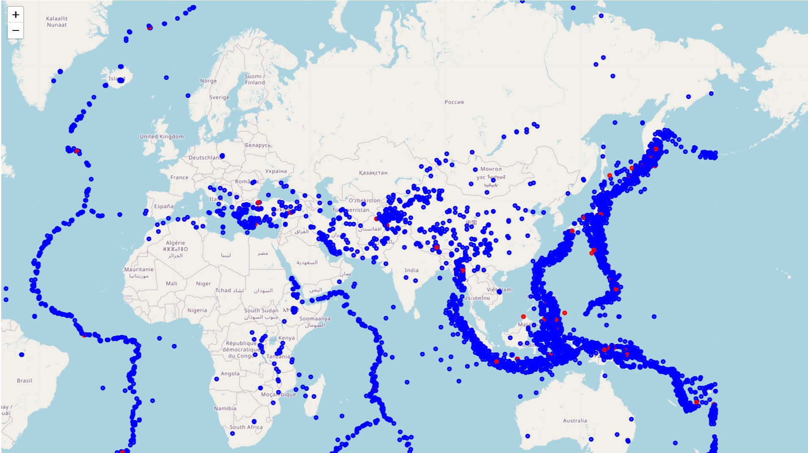

GeoAI Earthquake Strength Classification
Machine Learning • Seismology • Geospatial Analysis
Project Overview
This GeoAI project explores how machine learning and geospatial analysis can be used to study earthquake patterns and classify earthquake strength using global seismic data. The model analyzes spatial location and focal depth to identify patterns in earthquake energy release.
Magnitude Distribution

Depth–Magnitude Seismic Profile

Model Explainability (SHAP)

Global Earthquake Classification Map

🔴 Strong Earthquake (Magnitude ≥ 6)
🔵 Weak Earthquake (Magnitude < 6)